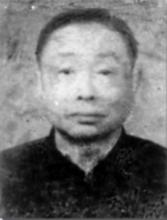
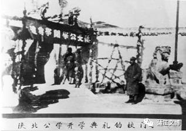
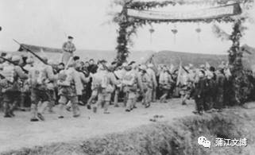

蒲江历史文化名人之宋其康
宋其康
宋其康，字君度，四川省蒲江县中兴场人。清光绪二十七年(1901年)，出生于蒲江县中兴场（今属鹤山镇）。
一、发展中共组织，担任邛大特支书记
1929年，宋其康在蒲江第一小学（文庙）任训育主任，与李东明（蒲江人，中共党员）等在文庙开办夜校，在师生、店员中秘密组织“苏维埃之友社”、“红军之友社”，向群众普及文化知识，宣传革命思想。1930年春，他们抗议县府、教育局暴虐，率第一小学师生发动罢课。同年，宋在成都岷江大学就读，加入中国共产党。毕业后，宋担任中共四川省委交通员，以《成都庸报》编辑、市东城小学校长和成都各行业职工联合总会秘书身份，从事党的地下工作。此间，宋回蒲江，在城关药王庙内开设平民工厂，联合多人从事社会福利工作，秘密宣传共产主义。
1931年5月，宋其康与车耀先（大邑人，中共党员）、周寒森（邛崃人，中共党员）、邹趣涛（大邑人，中共党员）联络庹应权、旦永安等12人在邛崃发起成立“邛（崃）大（邑）蒲（江）地方自治促进会”，总部设成都东马棚街，借合法形式组织群众从事革命活动。直到1934年，邛大蒲地方自治促进会才完全停止活动。
1932年春，宋被中共四川省委派到邛大蒲地区，清理党组织，在大邑组建邛大特别支部。宋任特支书记，上属中共四川省委省委领导。他以王泗小学教师身份为掩护和朱淑盈（大邑人，1931年12月在成都由宋其康介绍入党）在灌口场、新场、王泗营等地区发展牟家荣、张续良、孟鹤松等人为中共党员，成立大邑县的第一个中共支部——王泗支部，宋任书记孟鹤松负责组织，朱淑盈负责宣传工作。在中共王泗支部领导下，青年学友互助会成立，他们在王泗、新场街上，张贴“打倒日本帝国主义”、“打倒军阀、打倒土豪劣绅”等革命标语。同时，宋其康到蒲江县城，吸收彭似佛、李淑华（宋之胞妹）、宋微钦等人入党，建立蒲江党小组，以李淑华在县城开设的“淑华商店”为党组织的秘密联络点。8月，宋其康到蒲江寿安，与中共党员、小学教师龙世骝（蒲江人）取得联系，布置在寿安发展党的组织。他带领赵克云（邛崃人，中共党员）在蒲江青龙场之杜山召开会议，成立中共寿安支部委员会。委员会由赵克云、熊永荣、龙世骝、杜成新等人组成，赵克云任书记，受中共邛大特支领导。寿安党支部先后发展喻吉轩、王学、李克文、陈志远、杨荣安、陈伯其、王步銮、张文彦等8名党员，建立成平小学和区公所两个党小组。据统计，邛大特支时期，所属党员，可查者达37人。11月，宋其康在邛崃牟礼镇牟礼学校创办邛崃历史上第一张报纸——《翻身报》，亲任主编，负责编辑、印刻、出版工作。《翻身报》第一期刊头语：“如今豺狼当道，捐税多如牛毛！大家只有团结起来，抗款抗捐，打倒军阀土豪，推翻豪绅统治政权，建立人民自己的政府……。被剥削的民众联合起来，达到军阀就叫翻身！工人农民组织起来，达到剥削阶级就叫翻身！”该报先后办了六期，在以后的武装抗捐斗争发挥了不小的作用。
1932年春夏之际，中共四川省委派王明安（邛崃人，中共党员）到邛崃与宋其康一道，开展筹建邛大县委（亦称邛大蒲县委、邛崃县委）的工作。1933年夏，中共邛大县委正式组建，王明安任县委书记，宋负责组织工作，王荣忠负责宣传。据统计，邛大蒲县委发展党员72人，所属支部13个。
二、领导抗捐斗争，身任上川南抗捐军参谋长
1932年10月到1933年9月，四川军阀战争史上规模最大、时间最长的“二刘大战”爆发。战争前后持续近一年，战地绵亘川西、川北、川南数十县，动用兵力30余万人，四川大小军阀几乎全部卷入。这次战争死伤兵员、百姓数以万计，损失财产无数，给四川人民带来了巨大的灾难。在此期间，各地军阀不顾广大劳苦民众的死活，田赋一年几征，捐税多如牛毛，人民生活艰苦，饿殍遍野。刘文辉向其防区摊派“紧急战费”，并拍卖寺观田地等公产，预征田粮到民国五十五年(1966年)。
1932年11月，中共川西南特委决定在川西南地区成立“上川南抗捐大同盟”，发动群众进行抗捐斗争。上川南指的是邛（崃）、蒲（江）、大（邑）、名（山）、崇（庆）、芦（山）、丹（棱）、洪（雅）、新（津）等县。同时，邛大蒲党组织成立“抗捐大同盟”邛崃分部。1933年春，“抗捐大同盟”大邑分部成立。“抗捐大同盟”分部几经筹划，反复酝酿，在人力武器、群众基础、地理条件、基层党组诸因素进行综合研究后，决定派宋其康到邛崃夹关王店与孟光远（邛崃人，中共党员）、植尚荣（邛崃人，中共党员）一起策划抗捐起义问题。“上川南抗捐大同盟”由中共上川南特支领导，设“上川南抗捐军”总司令部。孟光远任总司令，宋其康任参谋长，起义后陈伯恋任政治委员。总司令部下设两个路司令部，第一路司令孟光远兼任，副司令徐焕堂，教练长陈海轩，文书李荣成，司务长肖林章，司号郑子洲，下辖三个大队，每个大队下设若干分队，200余人；第二路司令王斌武，副司令魏尧光，路下的编制由王、魏自定,约200余人；第三路司令部负责人郑载阳、徐锡三，人数不详。
1933年春，红四方面军建立“通、南、巴”革命根据地。中共四川省委适时发出系列指示，要求全川各地方党组织支持红军，在农村发动农民，反对军阀拉丁派款，开展抗粮抗捐和游击战争，以扰乱敌人后方，支持配合红四方面军的斗争。上川南抗捐军宋其康参谋长到蒲江寿安党支部传达“实行联合阵线，争取武装实力，筹建抗捐武装，开展抗捐斗争”的指示和“上川南抗捐大同盟”斗争纲领，领导蒲江的抗捐斗争。宋其康、赵克荣、龙世骝研究分析了寿安及周边区域的情况，决定首先争取寿安民团大队长朱泽轩（朱有七八十条枪）的支持。由龙世骝出面找朱家祠小学校长吴光先去了解朱的情况（吴和朱是连襟关系），然后经宋其康、赵克荣、龙世骝反复动员，取得朱的合作；后龙世骝又通过其舅舅赵月迁（大绅士）的关系，争取了邛崃牟场乔子均（哥老会总舵把子）的管家乔仲伦和观音院的民团大队长乔泽高（乔有三十条枪）的支持。在朱家祠，宋其康、赵克荣、龙世骝、朱泽轩、乔仲伦、乔泽高六人，以吃“血酒”、“拜把”的形式，结为同盟。与此同时，寿安民团大队长赵国定通过和共产党人的接触，保持中立态度；成平小学师生在寿安贴出“打倒贪官污吏，打倒土豪劣绅”的标语口号，斗争矛头直指寿安团总喻南轩，并揭露喻一贯势仗鱼肉乡民，贪污粮款的种种罪行，陈伯其、王步銮、喻吉轩、张文彦等人组成清算委员会，在广大群众支持下把喻赶下了台，夺取了寿安政权。陈伯其任寿安区长，王步銮任武装分队队长。寿安支部以寿安成平小学校为基点，团结进步的师生，积极争取著名人士杨道南（与四川边防军总司令李家钰是同学，第五混成旅长李注东的老师）的支持，提出“教育经费自主”的口号，揭露寿安教育委员万雨村（曾任团总）贪污教育经费问题。龙、赵等人按照计划，组织喻吉轩、王学、杨荣安、陈志远、李克文、张文彦等教师，成立“清算委员会”，清算万雨村的贪污罪行，把万赶下了台。这次行动得到了寿安各学校师生的一致拥护,在社会上影响很大。此后张文彦任寿安教育委员,熊永荣任成平小学校长，杨荣安任训育主任。随着革命形势的迅速发展，为把抗捐斗争深入到农村，宋其康领导寿安支部分头进行组织发动工作。龙世骝与王学在青龙场龙山召开群众大会，建立抗捐组织；赵克荣在寿安召集熊永荣、陈伯其、杨荣安等几十人的会议，进一步研究斗争策略，以及成立抗捐军的步骤，推选熊永荣、陈伯其、王步銮为寿安抗捐军领导人；在敦厚、松华等地，徐子乾、周会群组织罗建安、罗伯南等人，创办“壁报社”，登载抗捐大同盟的布告、纲领、传单、等宣传资料，转载宋其康主编的《翻身报》上的文章。在党组织的领导下，经深入发动，寿安党支部通过社会关系，从寿安和邛崃观音院、牟场等民团大队筹得步枪100余支，组建了寿安抗捐军。以寿安为中心的抗捐军成立起来，掀起了抗捐抗粮的群众运动。

20世纪30年代中共领导的农民抗捐军
1933年4月17日，宋其康与王斌武去五台山、玉林山一带，向被争取的绿林人士头目面谈抗捐起义事宜，返回到名山中锋场时，不幸廿四军清乡队逮捕，关入邛崃监狱。为此，中共邛大县委组织“上川南宋案后援会”，发布《上川南宋案后援会宣言》称：“当着帝国主义加紧进攻中国的时候，当着中国国民党军阀加紧收刮苛捐杂税、剥削劳苦大众的时候，只要是时代的青年，革命的战士，莫不走上前线作民众的先锋！宋钰，字其康，本是革命的战士，此次由成都到上川南来考察上川南的抗捐斗争，不幸于1933年4月17日，在名山县中峰场被捕，由名山送到邛崃，即被邛崃县政府上镣收监。同仁等为了要援救我们革命的宋同志，主持正义，所以不避艰辛，组织上川南宋案后援会营救宋其康。”赓即，中共邛大县委派孟绍怀到寿安，向党组织传达武装营救宋其康的部署。龙世骝到蒲江县城与彭似佛联系，彭立即派李淑华、宋微钦带领武装人员到寿安与陈伯其带领的抗捐军队伍会合，到邛崃县牟场集中待命。赵克荣带领陈伯其、王步銮和抗捐军积极分子周会群、邓炳章等人，到邛崃县城高水井参加营救宋其康会议。在开会中，被侦探发现，激战后突围返回寿安，营救宋其康的计划落空。
1933年冬，趁二刘之战中刘文辉败退雅安，邛崃县城混乱之机，宋其康成功越狱脱险，先潜伏在邛崃牟场、乔坎，后返回寿安继续领导抗捐斗争。1934年春，在名山马鬃岭养病的上川南抗捐军总司令孟光远将其妻黄文英托付给宋其康，宋将黄文英带到蒲江中兴场安定下来，黄以女工身份，帮宋家织布（宋家开有织机房）、煮饭。9月，驻防新津的四川边防军第五混成旅副旅长兼11团团长张光典派营长徐象渊，亲率两个连，到寿安镇压游击队。宋其康转移到中兴场隐蔽，赵克荣回邛崃隐蔽，龙世骝、陈伯其、王步銮等人经眉山转到资中隐蔽。当晚，徐率部从回龙赶到寿安，包围寿安区公所，扑空后随即包围寿安成平小学校，逮捕了没来得及转移的杨荣安、喻吉轩、董汉成等人。杨荣安被枪杀在邛崃高河。几天后，抗捐军骨干邓炳章回寿安探听消息，被敌人枪杀在灰窑街口。11月，蒲江县长何本初得知宋其康回到中兴场的消息，派县保安团分队长舒振环带领30余人，悄悄溜到中兴场，企图逮捕宋其康。不料，宋得消息提前转移隐蔽，敌人扑空，抄了宋其康的家，抢走财物，并将宋妻杨玉珍、大妹李淑华、小妹宋微钦关进监狱。何本初采取软硬兼施等手段估逼她们供出宋之行踪，三人据理反驳，引起社会舆论强烈反响。何迫于情势，只得将三人释放。其间，宋其康为了孟光远之妻黄文英的安全，冒险回到蒲江中兴场老家，将黄文英秘密护送到成都，在成都桂花街租了间铺子，让她做卖木冈炭、火把柴等小生意维持生活。
1935年10月20日，红四方面军南下，攻占懋功，发布《天(全)芦(山)名(山)雅(安)邛(崃)大(邑)战役计划》。为迎接红军，宋其康、龙世骝、陈伯其、王步銮、周会群、喻与轩、李淑华、宋微钦等在龙山召开会议，决定把隐蔽在附近和转移到外地的抗捐军队员，重新组织起来。他们积极与上级取得联系，听候指示；派人在寿安附近的场镇散发迎接红军的标语、传单，张贴欢迎红军的标语口号；带领队伍在寿安主要路口准备迎接红军。红军北上后，蒲江县长林肇开依仗军阀部队，对抗捐军施行残酷镇压，党组织遭到严重破坏。宋被迫离开邛大蒲地区，同党组织失去联系。
三、北上找党，参加抗日活动
抗捐斗争失败后，失掉党组织关系的宋其康四处隐蔽，待机活动。1937年夏，他到南京寻找党组织，适遇原邛大中心县委成员邹趣涛。邹介绍并资助他去延安陕北公学第二队学习并任分队长。在延安，宋恢复了党的组织关系。1938年5月，宋被分配回川，清理邛大蒲党的组织。1939年，宋遭敌特分子追捕，转移去山西牺盟总会政治部宣传科任科员，因阎锡山制造“秋林事件”进行反共活动，宋返回蒲江。1939年7月，宋和中共蒲江特支成员廖学贵组成“蒲江县川康公路南龙段筑路经费清算委员会”，揭发清算蒲江县长谢从根等人贪污罪行，被谢通令缉捕。1940年，宋由蒲江特支负责人彭似佛介绍到河南陕县李家钰部队。此时，李将军被上级认为有“倾向进步力量”的嫌疑，会见宋其康仅客气几句而已，未予收留。宋访李无所收获，去李四十七军军部找出纳股长同乡柯克明求计。柯介绍宋到同乡余太佛开办的亦军亦商的“生活合作社”任经理。宋将共产党员王旭安置进合作社，进行地下工作。约半年，宋应故人之邀，到国民党三十六集团军四十七军特别党部任课长，随军参加抗日。1943年底，宋其康委托家乡的族叔在蒲江借三青团之名，创办刊物，监督批评政府，宣传抗日，启发民智。此事，因蒲江三青团人事变动，未果。1944年5月，三十六集团军总司令李家钰将军抗日殉国，宋返回四川，在省城一带从事地下活动。
四、组建武装，迎接胜利解放
人民解放军在解放四川的行军途中
1946年9月，宋其康返回蒲江。其时，蒲江党组织已被破坏，宋乃以开设织布作坊为掩护，常到邛崃、大邑找党的关系。但其言行均遭当局监视，无法开展工作。1947年11月，宋其康秘密联络邛崃、大邑等地的中共党员，在蒲江县寿安一带进行革命活动。国民党四川省政府向各地发出密电，要求严密查办。1948年，宋其康在成都将军街与川康人民游击队留蓉工作部党支部组织委员邹趣涛取得联系。二人久别重逢，格外亲切，秉烛彻夜长谈。宋其康把近几年来蒲江未建立党组织，党的力量极其薄弱，不少失掉组织关系的党员和进步人士苦寻党的领导，坚持与国民党反动派抗争等情况向邹趣涛作了汇报。宋与邹商讨了团结进步人士争取地方势力，组织农民武装，迎接全国解放等工作。
1949年，邹趣涛邀请宋其康到其位于青羊宫附近的住宅。宋其康向邹趣涛谈到“现在蒲江、新津等地区一些失掉党组织关系的人和一批热血青年，看到四川临近解放，积极要求能够参加革命工作，在乡下接不上头，因而苦闷得发慌”，要求邹趣涛想点办法，帮助解决党的组织联系问题。邹经过慎重考虑和多次谈话了解情况，将宋反映的情况在川康边人民游击纵队留蓉工作部党支部（简称“蓉支”）研究讨论。支部认为：对这些人可以作团结教育工作，同时组织他们学习《新民主主义论》，以提高他们的思想政治觉悟，为四川解放做些有益的工作。因此，同意宋其康等人加入“蓉支”领导的“新民主主义同志会”（简称“新同会”）。“新同会”的主要发展对象是：失掉组织联系后继续革命的地下党员和其他要求革命的进步人士。随即，宋其康被派回蒲江发展“新民主主义同志会”和组建“川东南人民游击纵队21支队”。敌特分子将宋的活动密报到西南特区区长兼西南长官公署第二处处长徐远举处，徐即令蒲江县警察局“严密侦控，获取证据，立即逮捕”。宋便将发展“新同会”和组建“21支队”的工作转移到新津。10月，宋其康在新津吸收共产党员廖永和、夏福安、田香圃和进步青年曾全福为“新民主主义同志会”成员，并率领他们到成都邹趣涛家研究发展“新同会”组织，组建革命武装等重大问题。“新同会”在蒲江、新津与当地的社会进步力量密切接触，因势利导，控制了部分地方武装力量。随着全国革命形势的发展和“新同会”力量的壮大，组织游击队的条件日益成熟，配合解放军作战的任务迫在眉睫。宋其康写信给廖永和，要他编组“川南自卫军二十一支队”。其任务是：保护人民生命财产，配合解放军袭击国民党军队，为解放战争的迅速前进铺平道路。1949年12月5日，“川东南人民游击纵队二十一支队”在新津县花桥正式成立，队员373人，党员32人，宋其康任支队政治委员。宋在新津积极组建“二十一支队”的同时，数次返回蒲江，千方百计准备在寿安镇组建另一支队，但终未成功。成都战役时，“二十一支队”在配合中国人民解放军二野十一军先头部队，追歼敌人，围歼宝资山残敌，阻击敌骑兵队等战斗中，作出了贡献，荣获解放军九十七团发给的奖状。
解放军入城与群众欢呼成都解放
1950年，游击队整编，宋其康分配到川西公安厅工作。1952年，赴山西大同女中任教。1955年“肃反”运动中，在大同市女中受审查，1956年，自动离职回蒲。1958年，宋被安排在蒲江县中兴公社净音寺畜牧场工作，乡村干部知其无重大问题，派作放养员。1961年辞世，终年60岁。